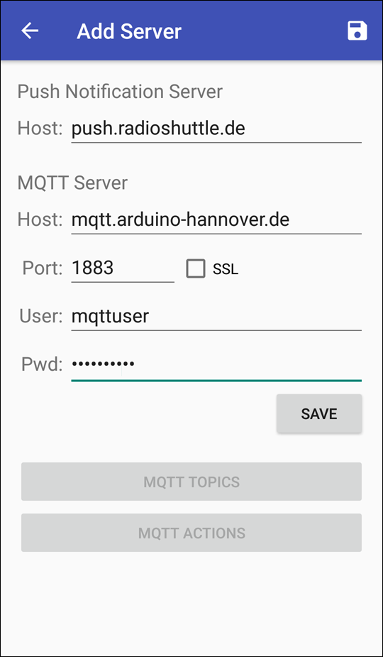
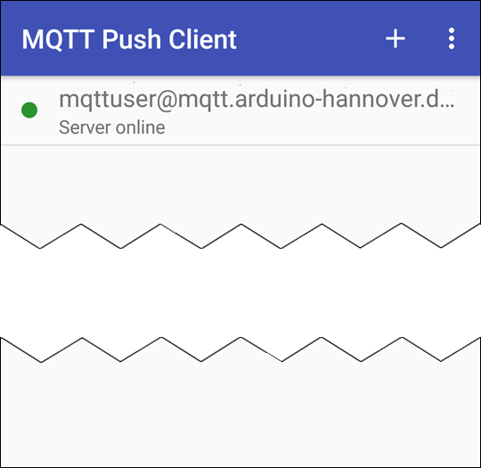

Der Standard-Port für den Push-Notification-Server ist 2033. Diese Angabe kann entfallen, wenn der Push-Server unter diesem Port erreichbar ist. Andernfalls muss der Port an den Domain-Namen angehängt werden, z. B. „yourpushserver.de:2009“.


Mehrere Anwender können ein identisches Konto verwenden. Beispielsweise können alle Mitglieder einer Familie oder Gruppe automatisch die identischen Einstellungen nutzen und gleichzeitig benachrichtigt werden.